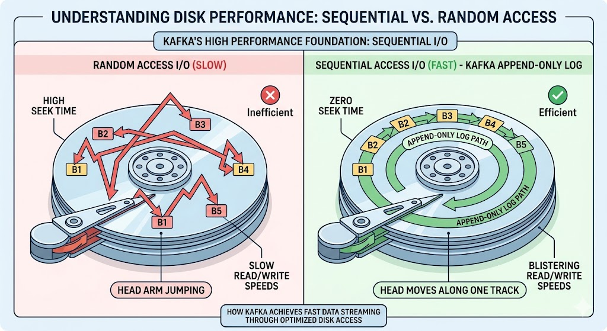
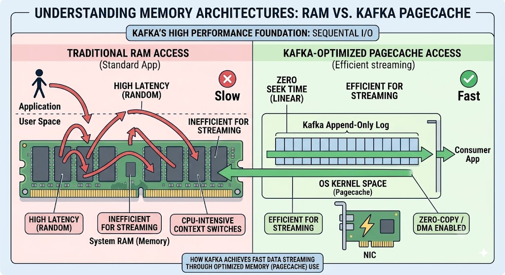
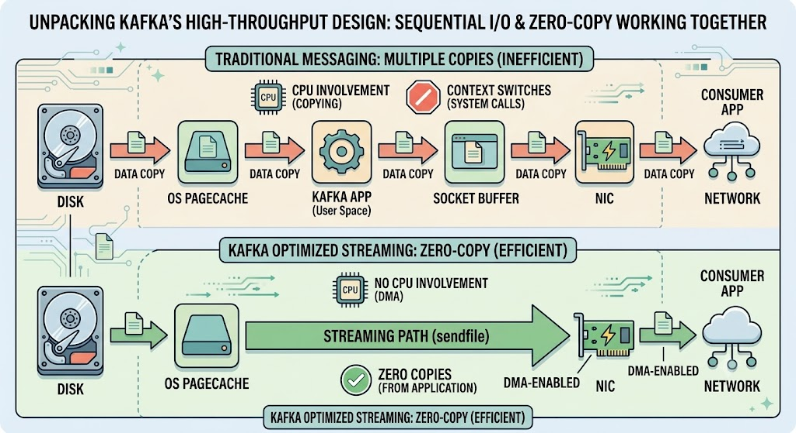
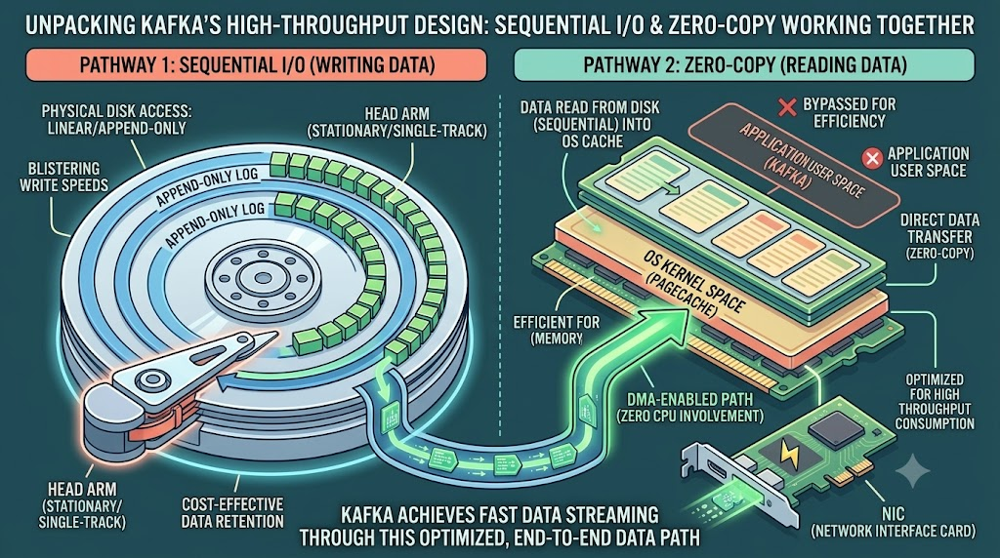

Kafka is fast for surprisingly ordinary reasons
Sequential I/O, the page cache, and zero-copy explain most of the story. None is exotic; Kafka is simply designed around what disks and operating systems already do well.
Kafka often appears in architecture diagrams as the component that can absorb enormous event streams. That reputation is deserved, but the explanation is less mysterious than the diagrams make it look.
The two ideas that matter most are sequential I/O and zero-copy. Both come from the same instinct: work with the hardware and operating system instead of adding another abstraction in the middle.
First, redefine "fast": throughput vs latency
"Fast" is ambiguous in system design. Do we mean low latency (how long a single message takes from producer to consumer) or high throughput (how much data moves over a window of time)? Kafka is unapologetically optimized for throughput.
Think of Kafka as a pipeline moving liquid. The goal isn't to make one drop travel faster — it's to widen the pipe so an enormous, continuous volume flows through. When people say "Kafka is fast," they mean it can move and store massive amounts of data in very little time. Two foundational choices make that possible.
First: write sequentially
There's a long-standing myth in software: "disk is always slow, memory is always fast." For random access that's broadly true. But it falls apart the moment you look at the access pattern.
On a spinning disk (HDD), random reads and writes force the physical head to jump around to different locations. That mechanical seek time is what makes random access sluggish. Sequential access is a completely different story: if the head can just read or write blocks one after another in a straight line, it flies.
Kafka exploits this by using an append-only log as its core data structure. When a producer sends a message, Kafka doesn't update an existing record or insert randomly — it just appends to the end of a file. A purely sequential operation.

The numbers speak for themselves
On modern hardware with a JBOD (Just a Bunch Of Disks) array, sequential writes can hit hundreds of megabytes per second, while random writes max out at mere hundreds of kilobytes per second. That's several orders of magnitude.
There's a cost angle too. Because sequential I/O unlocks high speeds even on plain HDDs, Kafka doesn't need expensive SSDs. HDDs cost roughly a third of the price of SSDs while offering about three times the capacity — so Kafka can retain huge volumes of messages for long periods, cheaply. That kind of cheap, durable retention was rare in enterprise messaging before Kafka.
It also leans on the OS page cache
Kafka deliberately keeps data in the operating system's page cache rather than managing a big in-process cache on the JVM heap. Reads and writes go through memory the OS already manages, sequentially, so "hot" data is served straight from RAM without Kafka copying it around itself — and without the garbage-collection pressure a giant heap cache would create.

Then: avoid copying data you do not need to touch
Kafka's whole job is moving data: network → disk when producers publish, and disk → network when consumers read. When you're moving terabytes, even tiny per-operation inefficiencies stack up. The usual culprit is unnecessary copying of data between the disk, system memory, and the network.
The inefficient way (without zero-copy)
Here's what a standard application does to send a file from disk over the network:
- Load data from disk into the OS kernel cache.
- Copy it up from the kernel cache into the application buffer (user space).
- Copy it back down into the kernel's socket buffer.
- Copy it from the socket buffer into the NIC buffer to actually send.
That's four copies and two context switches between user and kernel space — pure CPU overhead, and a disaster at streaming scale.
The Kafka way (with zero-copy)
Kafka skips the application layer entirely when serving data to consumers. It uses a system call like sendfile() on Linux:
- Data is loaded from disk into the OS cache (same as before).
- Kafka issues
sendfile, and the OS transfers the data directly from the OS cache to the NIC buffer.
The data never enters Kafka's user-space process. And because modern network cards use DMA (Direct Memory Access) for that transfer, the main CPU isn't even involved in the copy. Kafka just points at the data; the OS and the NIC do the heavy lifting.

sendfile straight from the page cache to the network.Putting it together
Kafka uses plenty of other tricks — aggressive message batching, smart partition distribution, compression — but Sequential I/O and Zero-Copy are the cornerstones. Writes go to an append-only log on disk in one linear sweep; reads stream straight from the page cache to the network card without ever touching the application.

Kafka treats the disk as an append-only log and lets the operating system move bytes to the network with very little interference. The result is not magic; it is a deliberately narrow design that matches a high-throughput streaming workload unusually well.